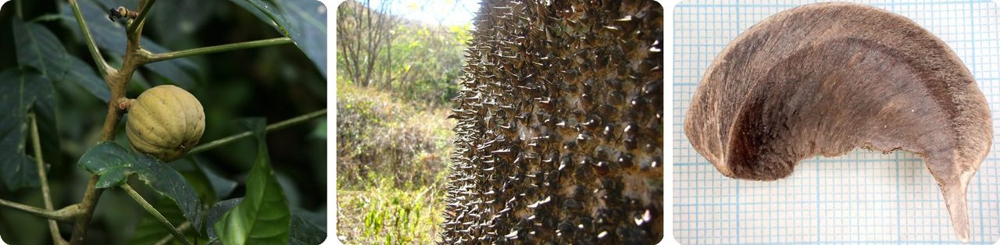
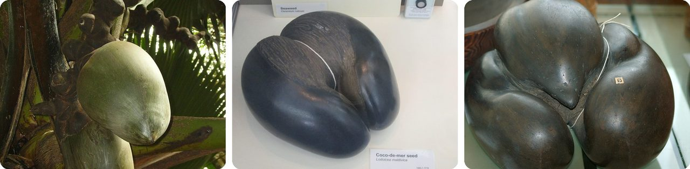
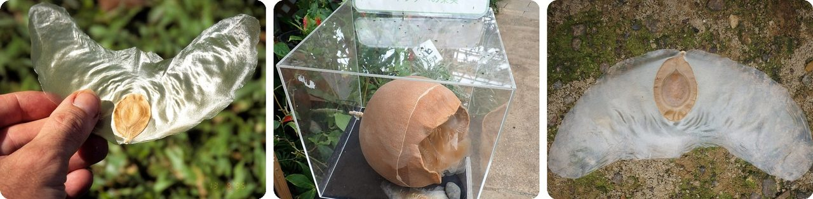
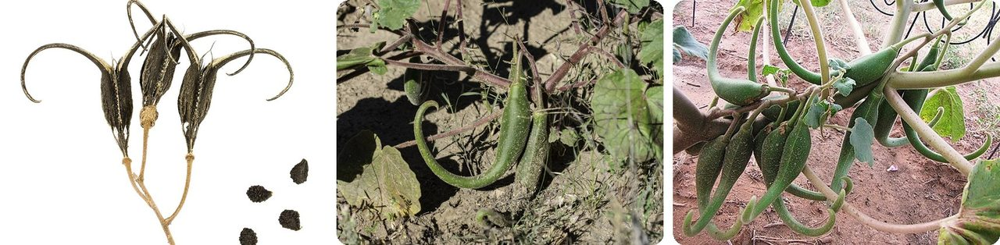
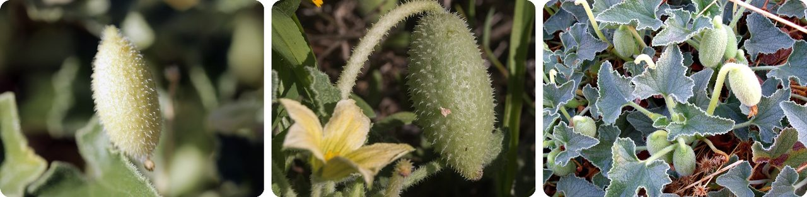
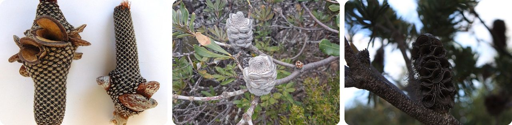
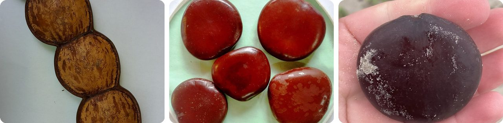
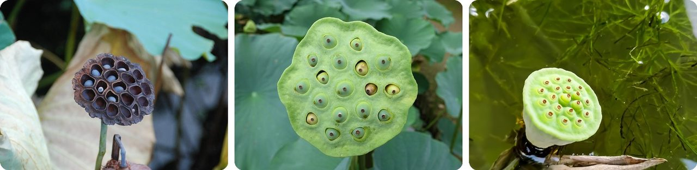
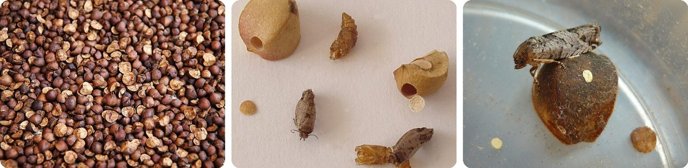
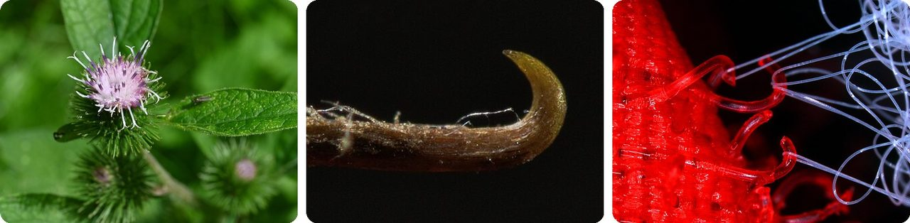

🌍 Top 10 Bizarre Seeds and Pods
Oct 22, 2026
1. 🌎 The sandbox tree's fruit explodes like a grenade

The sandbox tree grows in the tropical Americas, including the Amazon. Its fruit looks like a tiny pumpkin about the size of a tangerine, split into 16 wedges, each holding a flat seed.When it ripens, the fruit blasts apart and fires its seeds at about 250 km/h (160 mph), faster than a car on any highway. Most land around 30 m away, a third of a football field, and high-speed video shows they fly with backspin, which keeps them steady in the air.
It's not friendly up close either. The trunk is covered in sharp spikes, earning it nicknames like "monkey no-climb" and "dynamite tree." Its name comes from people sawing unripe fruits in half to make little boxes for the sand once used to dry ink.
Think of it as a fruit that doubles as a firework.
2. 🇸🇨 The coco de mer grows the heaviest seed on Earth

The coco de mer palm grows wild on just two islands in the Seychelles, in the Indian Ocean. Its seed weighs 10 to 25 kg, as much as a big suitcase, making it the heaviest seed in the world.It's slow at everything. The fruit takes 6 to 7 years to ripen, then the seed needs about 2 more years to sprout. When it does, it pushes out a root-like tube that can stretch 4 m, sometimes up to 10 m, before the new plant comes up.
And here's the twist. People once thought these seeds floated from island to island. In fact a healthy seed is too heavy to float, and only rotten, hollow ones drift at sea. That's why the palm never spread beyond its two islands.
Basically, it's a seed so heavy it can't leave home.
3. 🇮🇩 The Javan cucumber's seeds glide like paper airplanes

The Javan cucumber is a vine that climbs high into rainforests in Southeast Asia. Its gourd is about the size of a soccer ball and is packed with seeds, each wrapped in a thin, see-through wing about 13 cm across, as wide as your hand.When the seeds are ripe, a hole opens in the bottom of the gourd. The seeds drop out and glide away, rising, stalling, dipping and speeding up again like a butterfly. They've often been found on the decks of ships at sea.
In the 1890s scientists studied how steady these seeds are in flight, and early aircraft builders copied the shape. In 2022, engineers based a tiny biodegradable gliding sensor on them.
It's a paper airplane that grew on a vine.
4. 🇺🇸 Devil's claw pods hitch a ride on animals' feet

Devil's claw plants in North America grow long seed pods that end in a pair of curved hooks. When the pods dry out, the hooks harden into woody claws.Here's how it works: an animal steps on a pod → the hooks clamp onto its foot → as it walks, the pod gets ground and crushed open → seeds spill out along the way.
People found their own uses. The young green pods can be steamed and eaten like okra, and the Tohono O'odham people bred varieties with extra-long claws to weave into baskets.
In other words, it's a seed pod that ties itself to a passing hoof and rides away.
5. 🥒 The squirting cucumber fires its seeds in a jet of slime

The squirting cucumber grows wild around the Mediterranean. Its fruit looks like a tiny, hairy cucumber about 5 cm long, and inside, the seeds sit in slimy juice.As the fruit ripens, pressure inside builds to about 27 times normal air pressure, roughly 10 times what's in a car tire. Eventually the pressure pops the fruit right off its stem.
The skin then squeezes hard, and a jet of slime and seeds shoots out of the hole where the stem used to be. The seeds can land 7 to 8 m away, about two car lengths.
Think of it as a water pistol that fires its own babies.
6. 🇦🇺 Some banksia cones wait for a bushfire to open

Banksias are Australian shrubs and trees, first collected for science on Captain James Cook's first voyage to the Pacific. After flowering, they form a woody cone covered in hard little pods, each sealed shut like a clam.In most species, many of those pods won't open on their own. They stay clamped shut until a bushfire heats them, then split and release one or two seeds, each with a papery wing that spins it to the ground.
The fire also burns off the thick layer of dead leaves on the ground, which would otherwise stop seeds from sprouting.
Basically, it's a seed bank that only pays out when the forest burns.
7. 🌊 The sea heart grows pods taller than a person

The sea heart is a climbing vine from Central America, the Caribbean, northern South America and Africa. Its pods can reach 2 m long, taller than most adults, the biggest pods of any plant in the pea family.Each pod holds 10 to 15 seeds, each about 6 cm across, the size of a cookie. Inside every seed is a hollow air pocket.
That air pocket is the trick. Rain washes the seeds into rivers → the rivers carry them to the ocean → they float and drift on ocean currents, staying alive for at least two years.
It's a bean with a built-in life jacket.
8. 🇨🇳 Lotus seeds 1,300 years old have sprouted

The sacred lotus grows its seeds in a flat-topped pod that looks like a shower head, with each seed sitting in its own hole. When the pod dries, the seeds can stay alive for an incredibly long time.The record: lotus seeds dug out of a dried-up lakebed in northeastern China sprouted after about 1,300 years. That's around 40 generations of people waiting in the mud.
That staying power is part of why lotus is a symbol of long life in China.
In other words, it's a seed that can sleep through a thousand years of history and still wake up.
9. 🇲🇽 Mexican jumping beans jump because a caterpillar lives inside

Mexican jumping beans come from a shrub that grows in the mountains of northwest Mexico. In spring, a small moth lays its eggs on the shrub's seed pods, and the hatchlings bore inside and eat the seed.When the pods fall and split into three pieces, each piece holds a caterpillar tied to the inside wall with silk. When it gets warm, the caterpillar curls and uncurls, slamming into the wall, and the "bean" hops. Scientists think the random hopping helps it stumble into shade on hot days.
After months inside, it turns into a moth, pushes out through a round trap door, and lives only a few days. The town of Álamos calls itself the "Jumping Bean Capital of the World."
It's a bean-shaped hamster ball with a caterpillar at the wheel.
10. 🇨🇭 Burdock burrs gave us Velcro

In 1941, Swiss engineer George de Mestral came home from a hunting trip in the Alps with his dog. Both were covered in burdock burrs (the seed heads of the burdock plant), and he wondered how they stuck so well.Under a microscope he saw hundreds of tiny hooks that grabbed anything with a loop, like fabric, fur or hair. He spent about 10 years copying the idea and patented his hook-and-loop fastener in 1955.
He named it Velcro, from the French words for "velvet" and "hook." His company eventually sold about 55,000 km of it a year, enough to wrap around the Earth more than once.
Your shoes close with a copy of a weed's hitchhiking trick.
Fun fact
Inspired by an 1897 paper on the Javan cucumber's gliding seed, Austrian flight pioneer Igo Etrich built an unmanned glider in its shape that flew in 1904. His famous plane, the Taube ("dove"), wasn't modeled on a bird at all: its wings were copied from that seed. It became the first military plane mass-produced in Germany, and in 1911 an Italian pilot dropped the world's first bomb from an airplane out of a Taube. Next time: the strangest early flying machines.
Photo credits (Wikimedia Commons)
- #1: Hura crepitans (fruit).jpg by Hans Hillewaert, CC BY-SA 3.0
- #1: Espinas de jabillo [Sandbox tree] (Hura crepitans) (flickr) by Cristóbal Alvarado Minic, CC BY 2.0
- #1: Hura crepitans seed2.jpg by Magnefl, CC BY-SA 4.0
- #2: Female coco de mer growth.jpg by WL~commonswiki, CC BY-SA 3.0
- #2: Coco-de-mer seed, World Museum Liverpool.jpg by Rept0n1x, CC BY-SA 3.0
- #2: Coco de mer 3 seeds.jpg by Chb, CC BY-SA 3.0
- #3: Alsomitra macrocarpa seed (syn. Zanonia macrocarpa).jpg by Scott Zona from Miami, Florida, USA, CC BY 2.0
- #3: Fruit and seeds of Alsomitra macrocarpa in Tropical Dream Center, Motobu, Okinawa.jpg by M108t, CC BY 4.0
- #3: Alsomitra macrocarpa · Kinabatangan, Sabah, Malaysia by (c) Sam J. Thomas, some rights reserved (CC BY), CC BY
- #4: Proboscidea parviflora MHNT.BOT.2011.18.23.jpg by Roger Culos, CC BY-SA 3.0
- #4: Proboscidea parviflora · White Rock, NM 87544, USA by no rights reserved, CC0
- #4: Proboscidea parviflora - fruit.jpg by T.K. Naliaka, CC BY-SA 4.0
- #5: Mature squirting cucumber.jpg by Isasza, CC BY 3.0
- #5: Ecballium elaterium-Concombre d'âne-Fruit-20150816.jpg by Daniel VILLAFRUELA., CC BY-SA 4.0
- #5: Ecballium elaterium FruitsCloseup 27September2009 DehesaBoyaldePuertollano.jpg by Javier martin, Public domain
- #6: Two Banksia menziesii cones.jpg by Hesperian, CC BY-SA 4.0
- #6: Banksiasaxicolafolls.jpg by Casliber, CC BY-SA 4.0
- #6: Flickr - brewbooks - Banksia marginata ^ seed pod.jpg by brewbooks from near Seattle, USA, CC BY-SA 2.0
- #7: Entada gigas.jpg by Arn, CC BY-SA 4.0
- #7: Sea heart (Entada gigas) seeds.jpg by Salil Kumar Mukherjee, CC BY-SA 4.0
- #7: Entada gigas · Mustang Island State Park, Corpus Christi, TX, US by (c) River Ahlquist, some rights reserved (CC BY), CC BY
- #8: Lotus seed pod (6454121613).jpg by Maarten Heerlien from Voorschoten, The Netherlands, CC BY 2.0
- #8: Lotus seed pod - Motsuji, Hiraizumi, Iwate - DSC04442.jpg by Daderot, CC0
- #8: Lotus seed pod.jpg by Ushani Thennakoon, CC BY-SA 4.0
- #9: MexicanJumpingBeans.jpg by fontplaydotcom Dennis Hill from The OC, So. Cal., CC BY 2.0
- #9: Jumping beans 85.jpg by NobbiP, CC BY-SA 3.0
- #9: Mexican jumping bean moth (Cydia deshaisiana).JPG by AuldAlliance at English Wikipedia, Public domain
- #10: Arctium minus kz05.jpg by Krzysztof Ziarnek, Kenraiz, CC BY-SA 4.0
- #10: Arctium minus bract spine.jpg by El Grafo, CC BY-SA 4.0
- #10: Velcro photomicrograph.jpg by Trazyanderson, CC BY-SA 4.0
.jpg){kind=link}


.jpg){kind=link}


_seeds.jpg){kind=link}
.jpg){kind=link}


.JPG){kind=link}